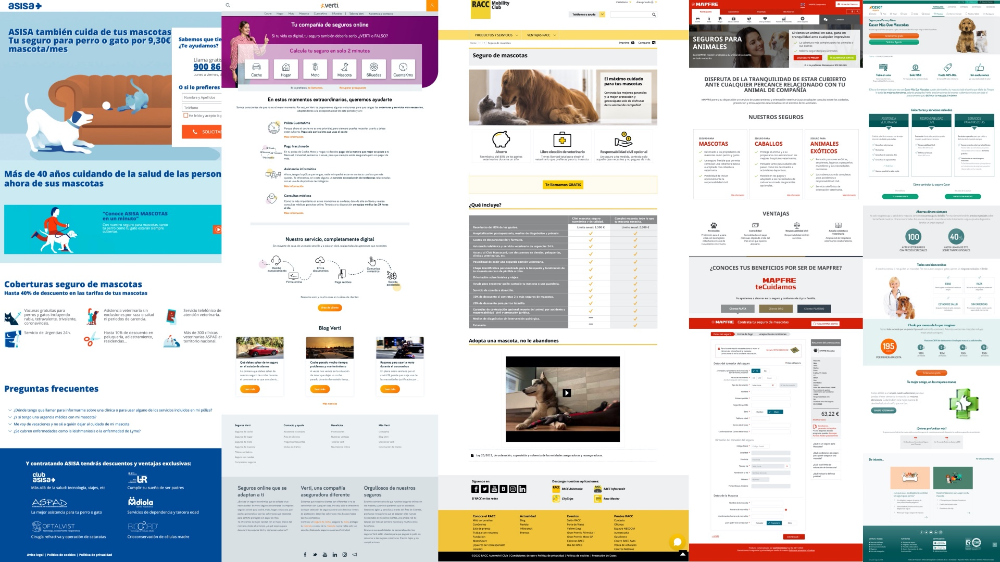
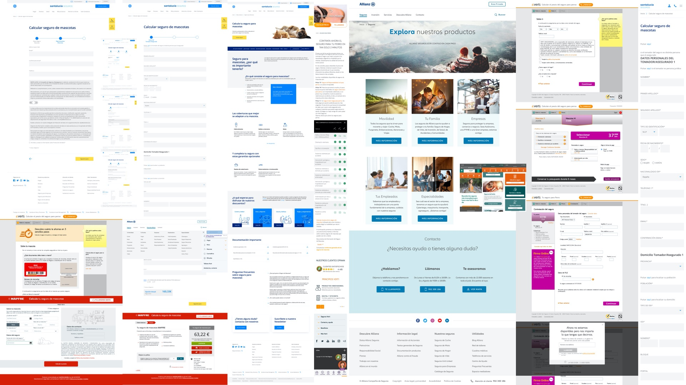
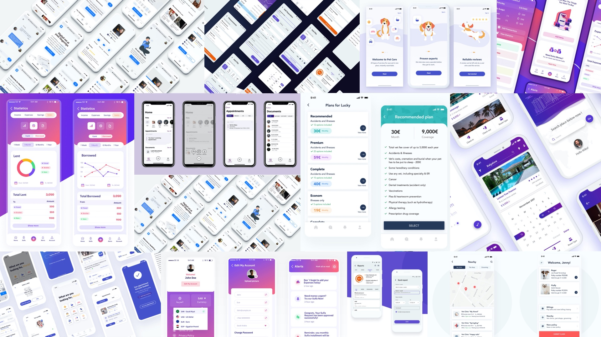
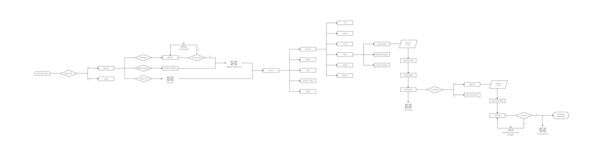
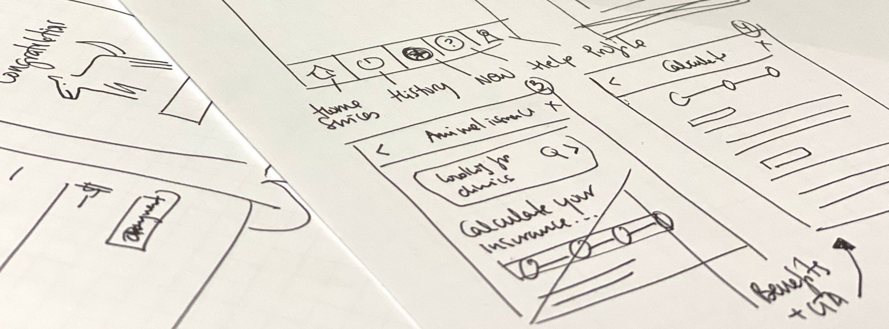
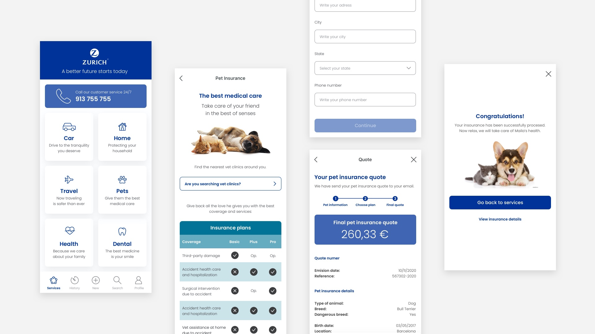

The challenge
The goal was to design an application for contracting pet insurance within the Zurich ecosystem. The challenge was not just technical: it was about making insurance feel human. Traditional insurance companies force users through long phone calls, dense forms, and opaque processes. The opportunity here was to design something radically simpler: a mobile experience that felt as natural and trustworthy as any other app Miriam uses every day.
Understanding user needs
Every decision in this project was anchored in a real person. Meet Miriam: a 35-year-old illustrator who has just arrived in Barcelona. She spends most of her day at a coworking space in the city center, is always connected, and lives on her phone. Having just settled in, she decided to adopt a dog. After visiting several kennels, she found Maila, a 3-year-old Bull Terrier.
Miriam wants to protect Maila with insurance, but she has zero patience for the traditional insurance process: the waiting, the calls, the paperwork. She wants something she can do from her phone, on her terms, in minutes. That gap between her expectation and the current reality was the entire design brief.
Designing with Miriam in mind meant every decision had a face, a context, and a reason.
Analyze
Before touching any design tools, I ran a deep analysis of Zurich's existing insurance products and their position in the market. From there, I mapped their main competitors to understand what was already out there: what information was valuable for users (coverage details, transparent pricing, plan comparison) versus what was valuable for the insurer (pet data, owner identification, payment method).

The competitive landscape was revealing: most insurance experiences were overcomplicated, heavy on form fields, and offered no real hierarchy of information. They all felt designed for the insurer, not the user. I also created a moodboard to explore how to organize content and establish a clear information architecture: both what to include and what to deliberately leave out.

The UI inspiration moodboard went beyond insurance. I looked at fintech and health apps that had solved similar problems: plan comparison that feels light, step-by-step data entry that doesn't feel like a tax form, and confirmation moments that feel like a celebration rather than a transaction.

User flow
With a clear understanding of the context and content requirements, I mapped the complete user flow: from the very first app download, through sign-up and onboarding, to the home screen and all the way through the pet insurance contracting journey. Every decision point was considered, including error states, quote confirmations sent by email, and the final policy confirmation screen.
The flow covers the full journey: new user or returning user, social login or manual registration, home navigation with six service categories, and the pet insurance sub-flow including quote request, plan selection, data entry, final quote, and policy purchase.

Wireframes
The design process started on paper. Quick, low-fidelity sketches to explore layout structures and navigation logic before committing to screens. This phase was about speed and iteration: testing ideas cheaply before investing in high-fidelity work.

From the sketches, I moved directly into high-fidelity screens applying Zurich's brand guidelines. The final design covers the complete contracted flow: the services home screen with all six insurance categories, the pet insurance landing with plan details, the coverage comparison table (Basic, Plus, Pro), the data entry forms, the final quote screen, and the confirmation: "Congratulations! Now relax, we will take care of Maila's health."

Prototype
Putting all the screens together, I built an interactive prototype covering the full pet insurance journey: from the moment the user is logged in through to the final policy confirmation. The prototype connects every screen in the contracting flow, allowing for end-to-end testing of the experience before any development work begins.

What I learned
Working from a real persona made every design decision easier to justify. When you have Miriam in mind, her context, her frustrations, her expectations, it becomes obvious what to simplify and what to keep. Insurance is a trust product. The UX has to earn that trust before the user has ever filed a claim.
The competitor analysis was also a reminder that most industries are still designing for the institution, not the person. The bar for delight in financial services is low, which means the opportunity for a genuinely good experience is enormous. Zurich's brand had the credibility. The design's job was to make that credibility feel accessible.